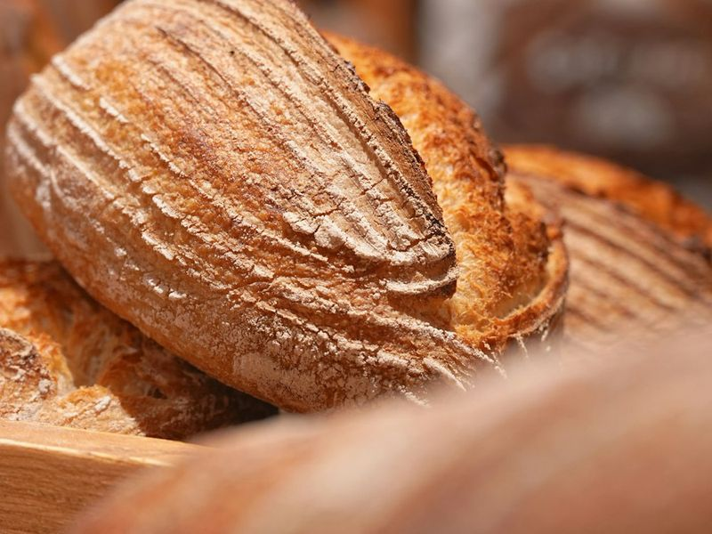
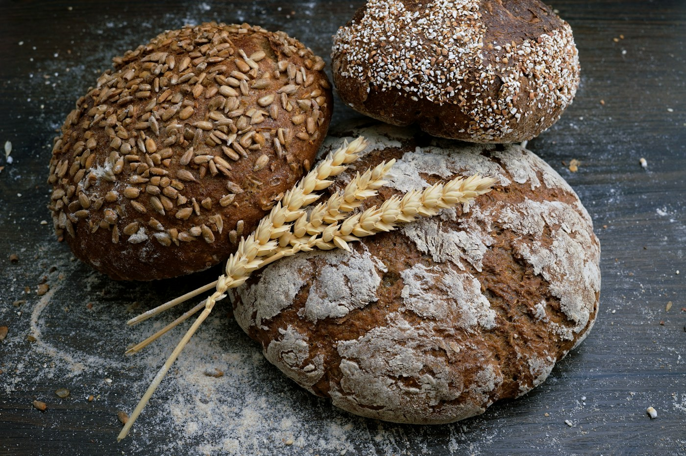
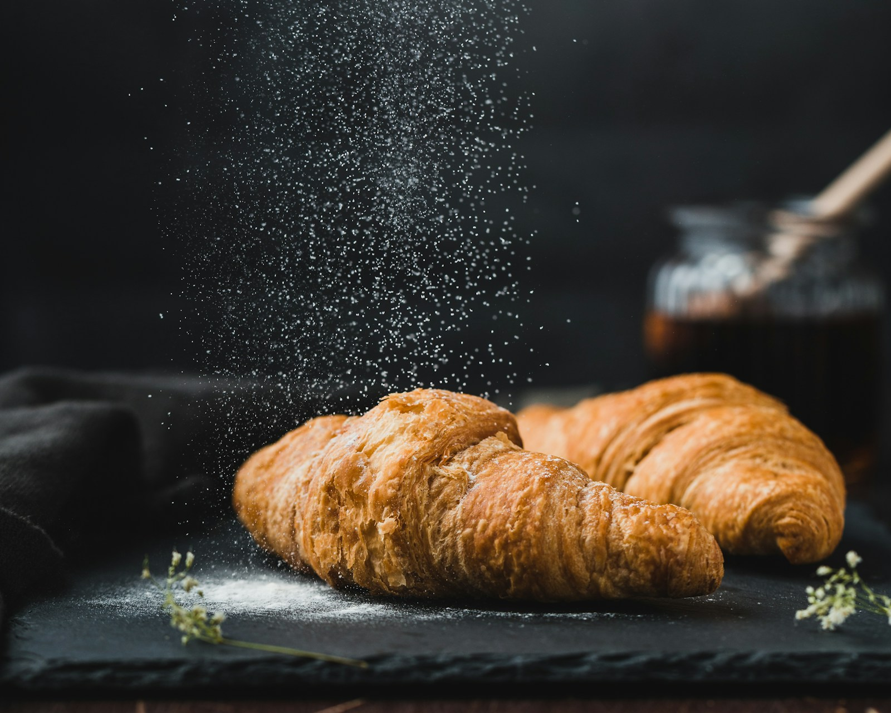
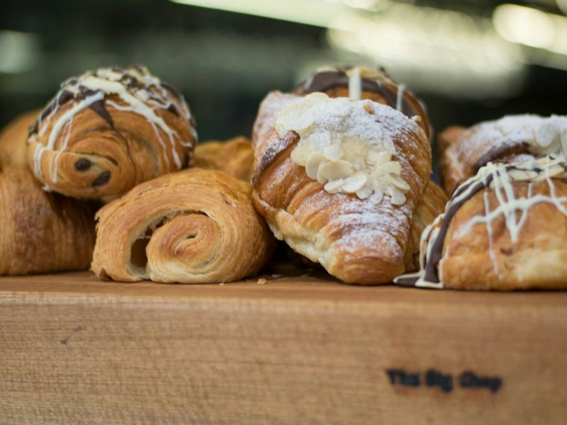
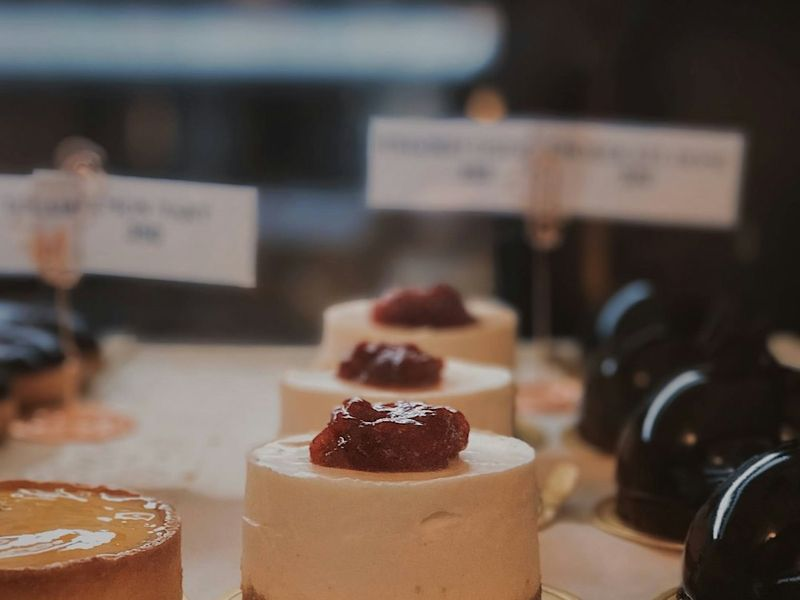
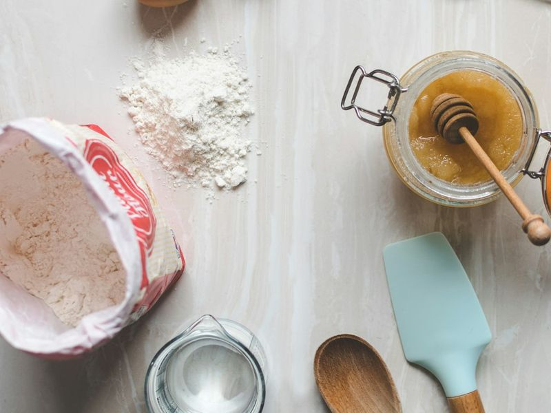
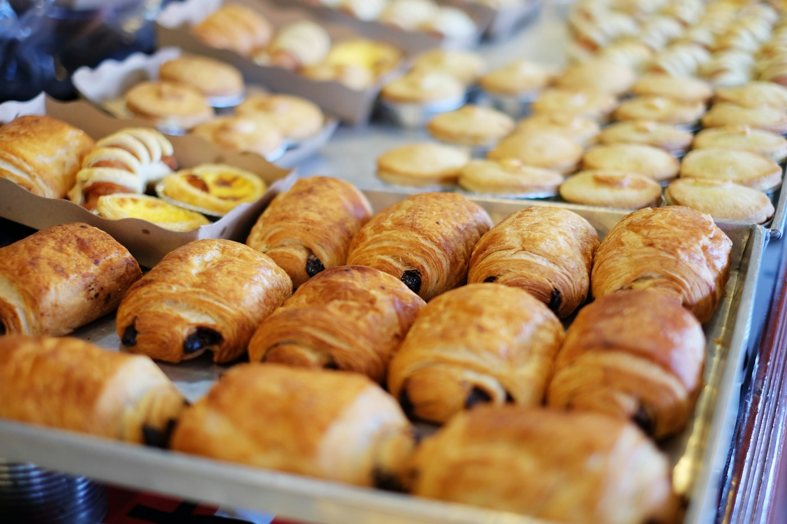

01
Panadería
Panes y baguettes elaborados respetando fermentaciones y tiempos de reposo.
Un recetario · Buenos Aires
La cocina también se comparte.
Panadería, pastelería y cocina casera.
Recetas reales, técnicas simples y su tiempo.
Nuestra historia
Amasar. Fermentar. Laminar.
Esperar. Hornear.
Nuestra historia empieza con una idea simple: un lugar para compartir recetas. Tomamos el estilo de una boulangerie porteña y lo pusimos al servicio de una cocina propia, casera y hecha con tiempo.
Acá no vendemos pan: compartimos recetas. Cada una tiene su origen, sus ingredientes y su paso a paso. Elegí la que quieras, guardala y volvé cuando tengas tiempo.

Nuestra manera de hacer
Acá reunimos recetas de panadería y pastelería de distintos países, con sus ingredientes y su paso a paso. Un lugar para encontrar, guardar y volver a hacer tus recetas favoritas.

Lo que hacemos

Panes y baguettes elaborados respetando fermentaciones y tiempos de reposo.

Croissants y masas laminadas trabajadas con técnica, manteca y tiempo.

Clásicos franceses y recetas que forman parte de la historia de la pastelería.

La cocina francesa también es parte de nuestra identidad.
Lo que compartimos
Recetas de panadería y pastelería de todo el mundo, reunidas en un solo lugar. Elegí una, guardala y cocinala a tu tiempo.
© De la masa al dato · Recetas para cocinar, guardar y compartir.
Un dato curioso
En nuestro recetario hay más de 160 recetas de postres de decenas de países: alfajores argentinos, flan uruguayo, tartas francesas y mucho más.
Cada ficha trae ingredientes, cantidades y el paso a paso. La cocina de siempre, lista para poner en práctica.
Manteca. Laminado. Fermentación. Cocción.

Panadería y clima
La temperatura del ambiente puede acelerar o hacer más lenta la fermentación de las masas con levadura. Consultá las condiciones exteriores actuales de Buenos Aires como referencia para acompañar su desarrollo.
Cargando las condiciones meteorológicas…
Los rangos son orientativos: la temperatura interior y la de la masa pueden ser diferentes de la exterior. Observá siempre el desarrollo de tu masa.
Datos meteorológicos: Open-Meteo.
Sobre el proyecto
Un recetario propio
Hecho en Buenos Aires